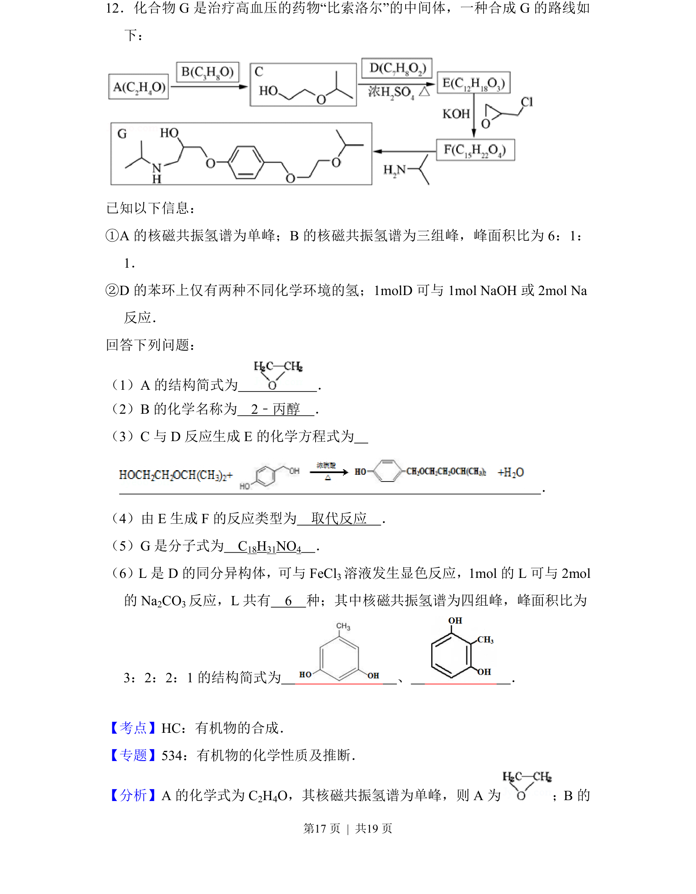
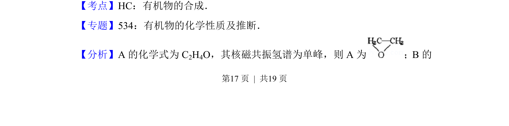
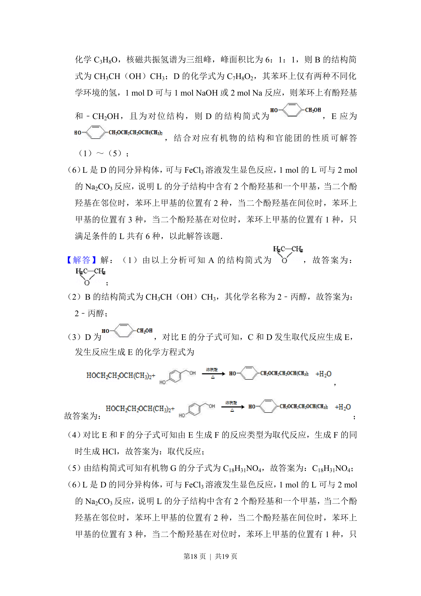
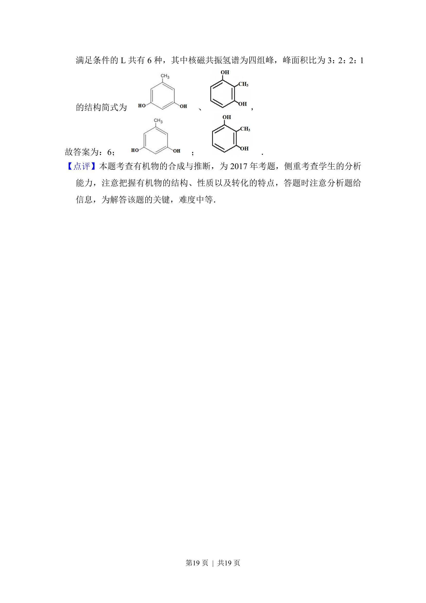

考点：有机物的合成 核磁共振氢谱 同分异构体 反应类型

以比索洛尔中间体合成为背景，考查有机物结构推断、反应类型、同分异构体书写及谱图分析。



📄 原 PDF 第 17 页：
素材/真题/吉林/2008-2024·（吉林）化学高考真题/2017年高考化学试卷（新课标Ⅱ）（解析卷）.pdf
12．化合物G是治疗高血压的药物“比索洛尔”的中间体，一种合成G的路线如 下： 已知以下信息： ①A的核磁共振氢谱为单峰；B的核磁共振氢谱为三组峰，峰面积比为6：1： 1． ②D的苯环上仅有两种不同化学环境的氢；1molD可与1mol NaOH或2mol Na 反应． 回答下列问题： （1）A的结构简式为 ． （2）B的化学名称为 2﹣丙醇 ． （3）C与D反应生成E的化学方程式为 ． （4）由E生成F的反应类型为 取代反应 ． （5）G是分子式为 C 18H31NO4 ． （6）L是D的同分异构体，可与FeCl 3溶液发生显色反应，1mol的L可与2mol 的Na 2CO3反应，L共有 6 种；其中核磁共振氢谱为四组峰，峰面积比为 3：2：2：1的结构简式为 、 ．
【考点】HC：有机物的合成．菁优网版权所有 【专题】534：有机物的化学性质及推断． 【分析】A的化学式为C 2H4O，其核磁共振氢谱为单峰，则A为 ；B的